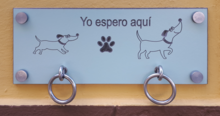

Perros
es un mamífero carnívoro de la familia de los cánidos, que constituye una especie del género Canis. En 2013, una población mundial estimada de perros estaba entre setecientos millones y novecientos ochenta y siete millones.Su tamaño (o talla), su forma y pelaje es muy diverso según la raza. Posee un oído y olfato muy desarrollados, siendo este último su principal órgano sensorial. Su longevidad media es de diez a trece años, dependiendo de la raza.
Comportamiento
- Inteligencia: Los perros son apreciados por su inteligencia.50 La inteligencia canina se refiere a la habilidad de un perro de procesar la información que recibe a través de sus sentidos para aprender, adaptarse y resolver problemas. La etología cognitiva es la disciplina que se encarga de estudiar esta área dentro de la cognición animal.
- Socialización: También en los perros, el término socialización se utiliza para caracterizar el proceso por el cual el animal se relaciona con su entorno, conoce sus reglas, entiende la estructura social, y percibe los límites. Los perros jóvenes a menudo aprenden rápidamente cómo comportarse con otros miembros del grupo, ya sean perros o humanos. Los perros adultos modelan a sus cachorros mediante correcciones auditivas o físicas cuando no se comportan de la forma esperada, y con premios si tienen comportamientos aceptables jugando con ellos, alimentándolos, limpiándolos, entre otros.
- Inteligencia: Los trastornos de la conducta canina se clasifican en tres tipos: patologías del desarrollo, sociopatías relacionadas con el ambiente y su jauría humana o animal, comportamientos disfuncionales que alteran la conducta normal, y que se ajustan para hacer frente a una situación cotidiana (fobia).
- Inteligencia: Un estudio reciente en Budapest, Hungría, ha encontrado que los perros son capaces de saber el tamaño que otro perro tiene con solo escuchar su gruñido. También que un gruñido específico es utilizado por los perros para proteger su comida. La investigación mostró que los perros no mienten sobre su tamaño, siendo esta la primera vez que una investigación ha puesto de manifiesto que los animales pueden determinar el tamaño de otro por el sonido que producen. La prueba utilizó imágenes de muchos tipos de perros, mostrando un perro pequeño, después uno grande y reproduciendo el gruñido de cada tipo.